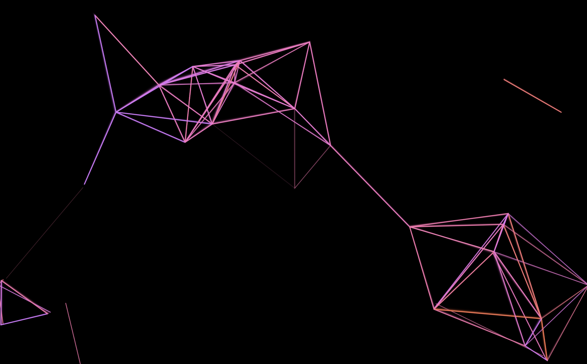
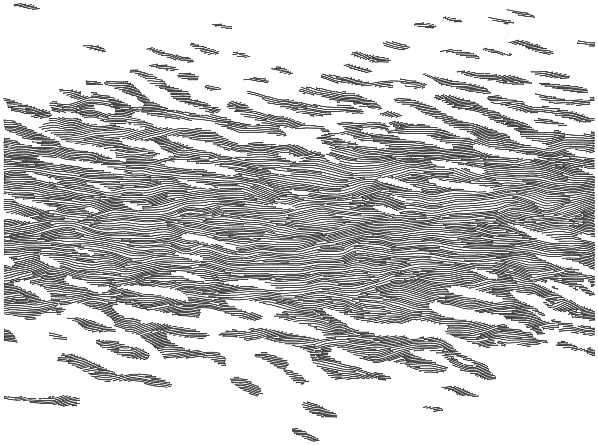
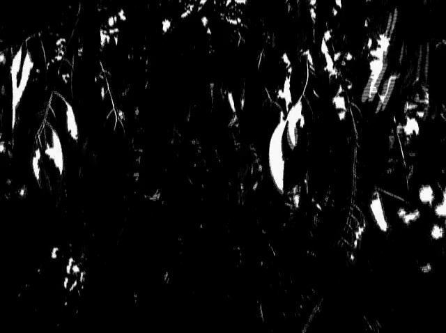
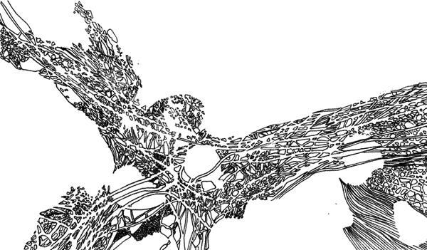

My creative practice explores the systems and processes through which the world becomes perceptible. Working with code, audiovisual systems, drawing and physical processes, I investigate how patterns emerge, how relationships become visible, and how the mechanisms that shape our experience also determine what remains hidden.
Recent Works

Connection
A browser-based audiovisual artwork exploring the hidden relationships that connect things to one another. Particles move through a shared space, and connections emerge as lines and tones when they draw close.
Project info Experience the artwork
Drawing from Nature
Drawings exploring the patterns and structures found in nature through computational rules and processes. Written in code and drawn by a pen plotter.
Project infoEarly Works

Royal College of Art
MA Communication Art & Design, 2006-2008.
Project info
Glasgow School of Art
BA Hons Fine Art Painting, 1999-2003.
Project info